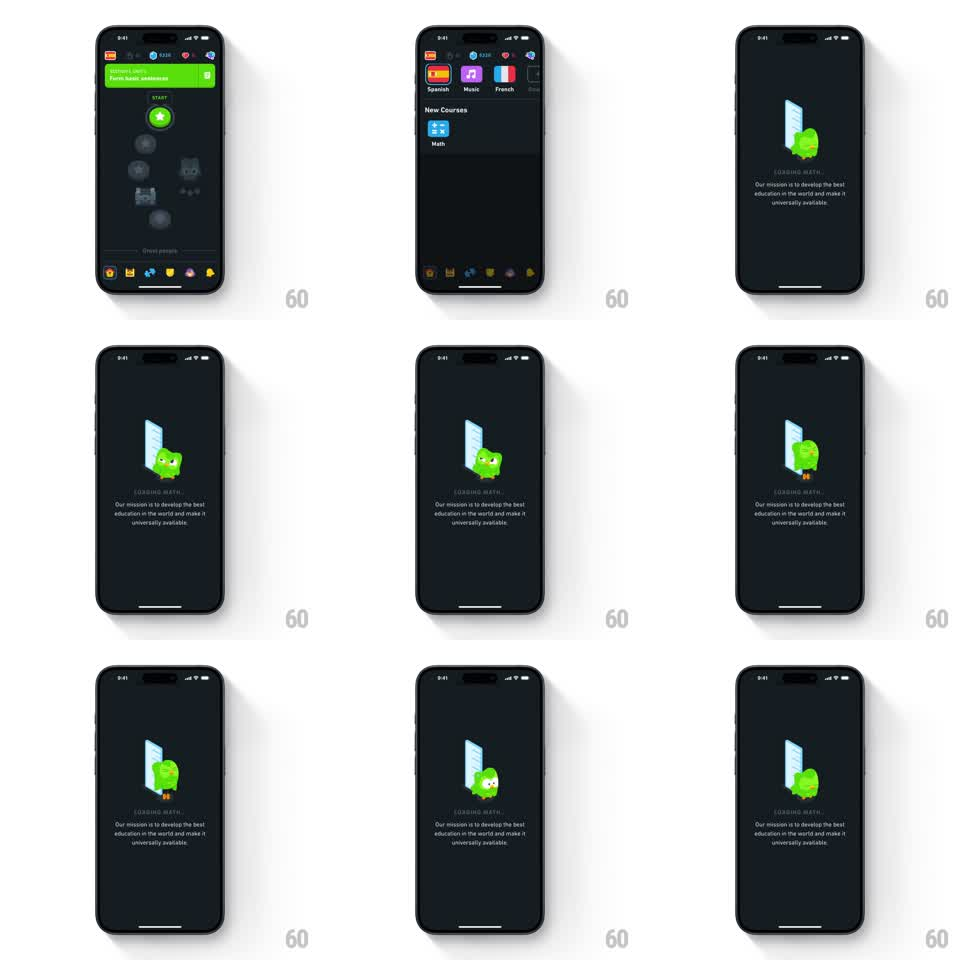

Media
Frame-by-frame

Rebuild this animation 1:1: Duolingo's math-course loading screen - after tapping the Math tile in New Courses, a dark interstitial shows Duo peeking from behind a tall white ruler, blinking and bobbing over a "LOADING MATH..." caption and mission copy.

Rebuild this animation 1:1: Duolingo's math-course loading screen - after tapping the Math tile in New Courses, a dark interstitial shows Duo peeking from behind a tall white ruler, blinking and bobbing over a "LOADING MATH..." caption and mission copy.
## Integration
Integration: stack-agnostic spec - springs given as stiffness/damping, timed motions as duration + curve; map every value to your framework and animation library of choice.
## Scene
Dark background (near-black navy). Entry point: course-select screen with language tiles (Spanish, Music, French) and a New Courses section holding the Math tile. Loading screen: center stage, a vertical white ruler/book edge with Duo peeking from behind its right side. Below: letterspaced gray caption "LOADING MATH...", then two lines of small mission copy ("Our mission is to develop the best education in the world and make it universally available.").
## Motion spec
Pattern: peek-a-boo mascot loading loop.
- Transition in: the loading screen fades over the course screen (200ms) while Duo and the ruler scale 0.9 to 1.0 (250ms, ease-out).
- Duo peeks: his body slides from behind the ruler's edge (translateX ~16px out and back, 800ms, ease-in-out) on a ~2s loop.
- His eyes blink every ~2.5s (lids close for 120ms), and he bobs gently (translateY +-6px sine, 2s).
- The caption pulses: opacity 0.4 to 1.0, 1s sine loop.
## Calibration
- The loop is ambient - nothing should snap or restart visibly; every cycle eases through its turnaround.
- Copy stays static and readable; only the caption pulses.
## Reduced motion
Static composition: Duo mid-peek, caption at full opacity, no loops.
## Don't miss
- The ruler is the occluder - Duo slides from behind it, never in front of it.
- The dark palette carries over from the course screen; no white flash between screens.